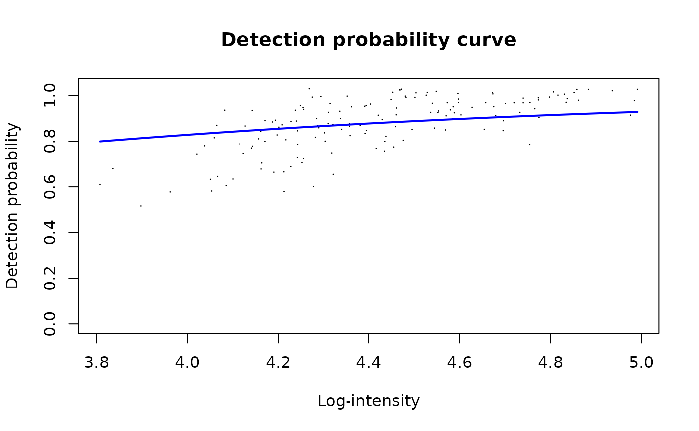
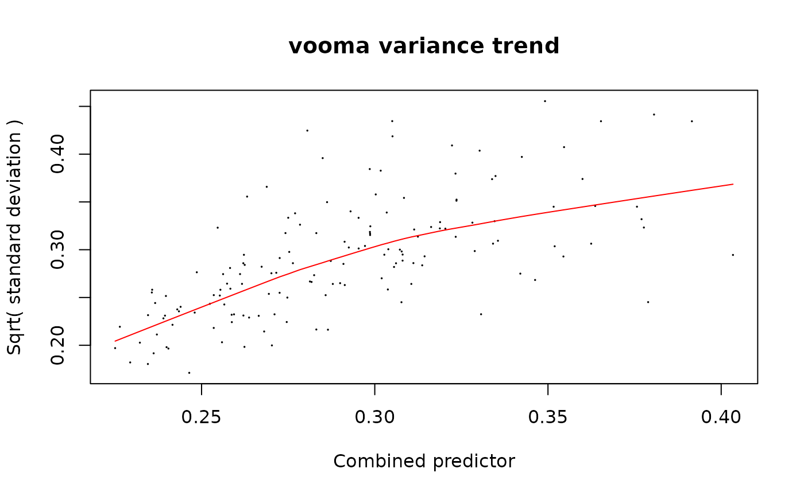
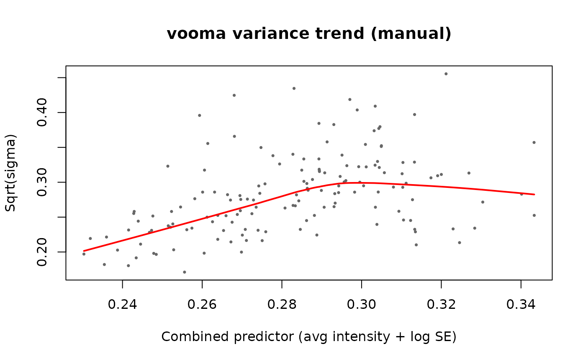
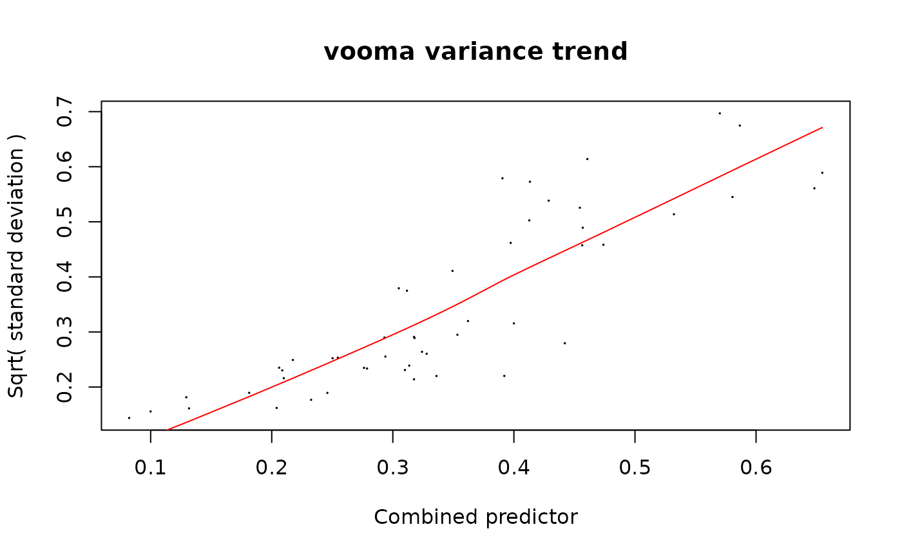

Using limpa Directly on prolfqua Simulated Data
Witold Wolski
2026-05-24
Source:vignettes/limpa_example.Rmd
limpa_example.RmdThis vignette demonstrates how to use the limpa package directly (without prolfqua wrappers) on peptide-level data simulated with prolfqua. Three analyses are shown:
- Baseline: limma with NAs — standard limma on protein-level medpolish-aggregated data (NAs dropped)
- limpa peptide-level — differential expression at the peptide level (no protein aggregation)
-
limpa protein-level — limpa aggregates peptides to
proteins via
dpcQuant(), then tests for DE
Setup and Data Simulation
Simulate peptide-level data with 3 groups (Ctrl, A, B), 5 replicates per group, and 50 proteins with realistic missing values.
sim <- prolfqua::sim_lfq_data_peptide_config(
Nprot = 50, N = 5, with_missing = TRUE, seed = 1234
)
lfqdata <- prolfqua::LFQData$new(sim$data, sim$config)Log2-transform and pivot to a wide matrix (peptides x samples) for limpa.
lfqdata <- lfqdata$get_Transformer()$log2()$lfq
wide <- lfqdata$data_wide(as.matrix = TRUE)
expr_matrix <- wide$data
annotation <- wide$annotation
rowdata <- wide$rowdata
cat("Matrix dimensions:", nrow(expr_matrix), "peptides x", ncol(expr_matrix), "samples\n")## Matrix dimensions: 152 peptides x 15 samples
cat("Missing values:", sum(is.na(expr_matrix)), "of", length(expr_matrix),
sprintf("(%.1f%%)\n", 100 * sum(is.na(expr_matrix)) / length(expr_matrix)))## Missing values: 278 of 2280 (12.2%)## Proteins: 50Design Matrix and Contrasts
All analyses below use the same design matrix: a cell-means model with three groups.
group <- factor(annotation$group_, levels = c("Ctrl", "A", "B"))
design <- stats::model.matrix(~ 0 + group)
colnames(design) <- levels(group)
cont_matrix <- limma::makeContrasts(
A_vs_Ctrl = A - Ctrl,
B_vs_Ctrl = B - Ctrl,
levels = design
)Baseline: Standard limma Analysis (no limpa)
As a baseline, aggregate peptides to proteins using prolfqua’s
medpolish aggregator, then run a plain limma::lmFit() +
eBayes() analysis. NAs are simply ignored by limma.
lfqdata_protein <- lfqdata$get_Aggregator()$aggregate()
wide_prot <- lfqdata_protein$data_wide(as.matrix = TRUE)
expr_protein_baseline <- wide_prot$data
cat("Protein matrix:", nrow(expr_protein_baseline), "proteins x",
ncol(expr_protein_baseline), "samples\n")## Protein matrix: 50 proteins x 15 samples## NAs in protein matrix: 48Fit limma. lmFit handles NAs by fitting each protein on
its available samples only.
fit_baseline <- limma::lmFit(expr_protein_baseline, design)
fit_baseline <- limma::contrasts.fit(fit_baseline, cont_matrix)
fit_baseline <- limma::eBayes(fit_baseline)
results_baseline_A <- limma::topTable(fit_baseline, coef = "A_vs_Ctrl", number = Inf, sort.by = "none")
cat("Baseline limma — A vs Ctrl: ", sum(results_baseline_A$adj.P.Val < 0.05),
"significant proteins at FDR < 0.05\n")## Baseline limma — A vs Ctrl: 40 significant proteins at FDR < 0.05
results_baseline_B <- limma::topTable(fit_baseline, coef = "B_vs_Ctrl", number = Inf, sort.by = "none")
cat("Baseline limma — B vs Ctrl: ", sum(results_baseline_B$adj.P.Val < 0.05),
"significant proteins at FDR < 0.05\n")## Baseline limma — B vs Ctrl: 36 significant proteins at FDR < 0.05Estimate the Detection Probability Curve (DPC)
The DPC models the probability of observing a peptide as a
logit-linear function of its intensity:
logit P(detected) = beta0 + beta1 * intensity. This is a
global parameter estimated once from the entire peptide-level
dataset.
-
beta1(slope) controls the strength of intensity-dependent missingness: 0 = MCAR, large = MNAR -
beta0(intercept) shifts the detection probability curve left/right
dpc_est <- limpa::dpc(expr_matrix)
cat("DPC parameters: beta0 =", round(dpc_est$dpc[1], 3),
", beta1 =", round(dpc_est$dpc[2], 3), "\n")## DPC parameters: beta0 = -2.424 , beta1 = 1
limpa::plotDPC(dpc_est)
Example 1: Peptide-Level Analysis with limpa
Quantify peptides with dpcQuantByRow()
dpcQuantByRow() quantifies each peptide row
independently (no protein aggregation). Internally it calls
peptides2Proteins() with each row as its own “protein”
(using protein.id = seq_len(nrow(y))). Missing values are
not filled in with fabricated numbers — instead, Bayesian maximum
posterior estimation integrates over the missing values using the
DPC.
y_peptide <- limpa::dpcQuantByRow(expr_matrix, dpc = dpc_est)The result is a limma EList object. Let’s inspect its
structure:
## Class: EList## Slots: E genes other dpc
cat("$E — expression matrix (peptides x samples), no NAs:\n")## $E — expression matrix (peptides x samples), no NAs:## dim: 152 15## NAs: 0## range: 3.28 5.5
cat("$genes — per-peptide annotation:\n")## $genes — per-peptide annotation:
str(y_peptide$genes)## 'data.frame': 152 obs. of 1 variable:
## $ PropObs: num 0.733 0.667 0.8 0.867 0.8 ...
cat("\n")
cat("$other — additional matrices:\n")## $other — additional matrices:## names: n.observations standard.error
cat(" $n.observations — how many precursors were observed per row per sample:\n")## $n.observations — how many precursors were observed per row per sample:## range: 0 1
cat(" $standard.error — posterior SD of the quantification:\n")## $standard.error — posterior SD of the quantification:## range: 0.01 0.3354
cat("$dpc — the DPC parameters used:\n")## $dpc — the DPC parameters used:
print(y_peptide$dpc)## beta0 beta1
## -2.424456 1.000000Key fields:
-
$E: The quantified expression matrix. All NAs from the input have been replaced by maximum posterior estimates (integrating over the DPC). This is a complete matrix. -
$other$standard.error: Per-peptide, per-sample posterior standard deviations. Peptides that were missing get larger SEs. This uncertainty is what limpa propagates into the DE model. -
$other$n.observations: How many observations contributed (1 = observed, 0 = was missing). -
$genes$PropObs: Proportion of samples where the peptide was observed.
Fit the DE model with dpcDE()
dpcDE() is a thin wrapper (9 lines of code) that calls
voomaLmFitWithImputation(). Here is what it passes and
why:
# From limpa/R/dpcDE.R:
dpcDE <- function(y, design, plot=TRUE, ...) {
eps <- 1e-6
voomaLmFitWithImputation(
y = y, # EList with $E and $other
imputed = !y$other$n.observations, # logical matrix: TRUE where value was missing
design = design, # design matrix
predictor = log(y$other$standard.error+eps),# log(SE) as precision predictor
plot = plot,
...
)
}Why vooma when SEs are already estimated?
The SEs from dpcQuantByRow()/dpcQuant() are
per-observation quantification uncertainties. But limma needs
observation-level precision weights for the linear model.
voomaLmFitWithImputation() converts the SEs into proper
weights via a bivariate lowess trend:
- Fit an initial
lmFit()to get per-protein residual SDs (sigma) - Model
sqrt(sigma) ~ average_intensity + log(SE)using a bivariate linear predictor - Smooth with lowess to get a mean-variance trend function
f() - Compute weights as
w = 1/f(fitted_value)^4— inverse fourth power of the predicted SD
This is analogous to how voom converts RNA-seq counts
into weights via a mean-variance trend, but extended with a second
predictor (the SE from quantification). The two predictors capture
different variance sources:
- Average intensity: the classical mean-variance relationship in proteomics
- log(SE): additional variance from quantification uncertainty (more missing precursors = larger SE = lower weight)
Additionally, voomaLmFitWithImputation() corrects
residual degrees of freedom for proteins where entire groups were
missing (all values imputed), preventing overconfident inference.
fit_pep <- limpa::dpcDE(y_peptide, design, plot = TRUE)
fit_pep <- limma::eBayes(fit_pep)The plot shows sqrt(sigma) vs the combined predictor
(average intensity + log SE). The red line is the lowess trend used to
derive precision weights.
Test contrasts
fit_pep2 <- limma::contrasts.fit(fit_pep, cont_matrix)
fit_pep2 <- limma::eBayes(fit_pep2)Results for A vs Ctrl at peptide level:
results_pep_A <- limma::topTable(fit_pep2, coef = "A_vs_Ctrl", number = 10, sort.by = "P")
print(results_pep_A)## PropObs logFC AveExpr t
## 9VUkAq~8655~lfq~MuiCBcCu~lfq~light 1.0000000 -0.8851463 4.898474 -25.27012
## 7QuTub~5556~lfq~YmC8HPCi~lfq~light 0.8666667 0.9350267 4.727822 21.12259
## 9VUkAq~8655~lfq~JBvPc2qc~lfq~light 1.0000000 0.6970139 4.821333 20.11020
## 76k03k~9735~lfq~HZbAVyOK~lfq~light 1.0000000 -0.8821452 4.544532 -18.87531
## 9VUkAq~8655~lfq~SGFBeD1f~lfq~light 1.0000000 0.6462590 4.720641 18.42412
## ydeWJl~7145~lfq~39NMZpix~lfq~light 1.0000000 0.5177794 5.040518 17.54125
## JV3Z7t~7426~lfq~IpbWaJdN~lfq~light 0.9333333 -0.7605254 4.500164 -16.37530
## R2i6w7~5452~lfq~KFwoIdLY~lfq~light 0.8666667 -0.5710462 4.594583 -16.27149
## ZHBkZv~6720~lfq~eKM49i6K~lfq~light 1.0000000 -0.5051761 4.933688 -15.79546
## I1Jk2Z~7286~lfq~TKuvSqs3~lfq~light 0.8666667 -0.6480346 4.548221 -15.31439
## P.Value adj.P.Val B
## 9VUkAq~8655~lfq~MuiCBcCu~lfq~light 2.474814e-24 3.761718e-22 45.50105
## 7QuTub~5556~lfq~YmC8HPCi~lfq~light 9.921774e-22 7.540549e-20 39.52930
## 9VUkAq~8655~lfq~JBvPc2qc~lfq~light 4.999951e-21 2.533308e-19 37.85792
## 76k03k~9735~lfq~HZbAVyOK~lfq~light 3.955088e-20 1.502933e-18 35.85932
## 9VUkAq~8655~lfq~SGFBeD1f~lfq~light 8.659287e-20 2.632423e-18 35.04942
## ydeWJl~7145~lfq~39NMZpix~lfq~light 4.202532e-19 1.064641e-17 33.32434
## JV3Z7t~7426~lfq~IpbWaJdN~lfq~light 3.740607e-18 8.122461e-17 31.31191
## R2i6w7~5452~lfq~KFwoIdLY~lfq~light 4.570919e-18 8.684746e-17 31.04096
## ZHBkZv~6720~lfq~eKM49i6K~lfq~light 1.160866e-17 1.960574e-16 30.03217
## I1Jk2Z~7286~lfq~TKuvSqs3~lfq~light 3.043369e-17 4.625921e-16 29.12106Results for B vs Ctrl at peptide level:
results_pep_B <- limma::topTable(fit_pep2, coef = "B_vs_Ctrl", number = 10, sort.by = "P")
print(results_pep_B)## PropObs logFC AveExpr t
## 9VUkAq~8655~lfq~40DK097A~lfq~light 0.9333333 1.0947462 4.809034 25.61456
## 9VUkAq~8655~lfq~MuiCBcCu~lfq~light 1.0000000 -0.6794121 4.898474 -21.57928
## MlNn1V~1396~lfq~PioauYsp~lfq~light 1.0000000 -0.6125184 4.818538 -18.95112
## I1Jk2Z~7286~lfq~TKuvSqs3~lfq~light 0.8666667 -0.8846547 4.548221 -17.11230
## 9VUkAq~8655~lfq~SGFBeD1f~lfq~light 1.0000000 0.5633911 4.720641 15.73300
## 7QuTub~5556~lfq~O5eT1xAS~lfq~light 1.0000000 0.6513203 4.574564 15.39969
## Fl4JiV~6934~lfq~tjP5Q817~lfq~light 0.8666667 0.5837830 4.719694 15.16521
## 7soopj~3451~lfq~WkbauTR1~lfq~light 1.0000000 0.4407287 4.899098 15.16147
## JcKVfU~1514~lfq~mCsMGaAU~lfq~light 1.0000000 0.6780110 4.330367 14.77820
## SGIVBl~4918~lfq~U6LlOS6x~lfq~light 0.8000000 0.8278659 4.200734 14.57807
## P.Value adj.P.Val B
## 9VUkAq~8655~lfq~40DK097A~lfq~light 1.566024e-24 2.380356e-22 45.95730
## 9VUkAq~8655~lfq~MuiCBcCu~lfq~light 4.887857e-22 3.714772e-20 40.10657
## MlNn1V~1396~lfq~PioauYsp~lfq~light 3.472411e-20 1.759355e-18 35.84954
## I1Jk2Z~7286~lfq~TKuvSqs3~lfq~light 9.265355e-19 3.520835e-17 32.67289
## 9VUkAq~8655~lfq~SGFBeD1f~lfq~light 1.313960e-17 3.994439e-16 29.93253
## 7QuTub~5556~lfq~O5eT1xAS~lfq~light 2.561092e-17 6.488101e-16 29.18613
## Fl4JiV~6934~lfq~tjP5Q817~lfq~light 4.122372e-17 7.892554e-16 28.73952
## 7soopj~3451~lfq~WkbauTR1~lfq~light 4.153976e-17 7.892554e-16 28.59601
## JcKVfU~1514~lfq~mCsMGaAU~lfq~light 9.152959e-17 1.545833e-15 28.01480
## SGIVBl~4918~lfq~U6LlOS6x~lfq~light 1.390940e-16 2.114228e-15 27.68235Summary of significant peptides (FDR < 0.05):
res_all_pep <- limma::topTable(fit_pep2, coef = "A_vs_Ctrl", number = Inf, sort.by = "none")
cat("A vs Ctrl: ", sum(res_all_pep$adj.P.Val < 0.05), "significant peptides at FDR < 0.05\n")## A vs Ctrl: 122 significant peptides at FDR < 0.05
res_all_pep_B <- limma::topTable(fit_pep2, coef = "B_vs_Ctrl", number = Inf, sort.by = "none")
cat("B vs Ctrl: ", sum(res_all_pep_B$adj.P.Val < 0.05), "significant peptides at FDR < 0.05\n")## B vs Ctrl: 115 significant peptides at FDR < 0.05Low-Level API: Step-by-Step Peptide Analysis
This section decomposes the limpa pipeline into individual function
calls, showing exactly what happens at each stage. We reuse the same
expr_matrix, dpc_est, and design
from above.
Step 1: Estimate the DPC
Already done above, but for completeness:
dpc_est <- limpa::dpc(expr_matrix)
cat("DPC: beta0 =", round(dpc_est$dpc["beta0"], 3),
", beta1 =", round(dpc_est$dpc["beta1"], 3), "\n")## DPC: beta0 = -2.424 , beta1 = 1The dpc() return value also contains hyperparameters
estimated from the data:
format_dpc_hyperparameter <- function(dpc_result, field) {
value <- dpc_result[[field]]
if (is.numeric(value) && length(value) == 1 && !is.na(value)) {
return(round(value, 3))
}
"not available"
}
cat("mu.prior (prior mean of row means):", format_dpc_hyperparameter(dpc_est, "mu.prior"), "\n")## mu.prior (prior mean of row means): 4.448
cat("df.prior (prior df for variance):", format_dpc_hyperparameter(dpc_est, "df.prior"), "\n")## df.prior (prior df for variance): 3.48
cat("s2.prior (prior variance):", format_dpc_hyperparameter(dpc_est, "s2.prior"), "\n")## s2.prior (prior variance): 0.032Step 2: Quantify peptides (row-level, no aggregation)
dpcQuantByRow() calls peptides2Proteins()
internally, treating each row as its own “protein” (i.e.,
protein.id = 1:nrow(y)). The result is an
EList:
y_pep <- limpa::dpcQuantByRow(expr_matrix, dpc = dpc_est)Step 3: Prepare inputs for the variance model
dpcDE() is just 3 lines. Here we do what it does
manually:
# Logical matrix: TRUE where the original value was missing
imputed_matrix <- !y_pep$other$n.observations
cat("Imputed values:", sum(imputed_matrix), "of", length(imputed_matrix), "\n")## Imputed values: 278 of 2280
# Log(SE) as a precision predictor for the variance trend
eps <- 1e-6
predictor <- log(y_pep$other$standard.error + eps)
cat("Predictor (log SE) range:", round(range(predictor), 2), "\n")## Predictor (log SE) range: -4.61 -1.09Step 4: What voomaLmFitWithImputation() does
internally
Below we manually replicate the internals of
voomaLmFitWithImputation(). This is the core of limpa’s DE
pipeline.
Step 4a: Initial linear model fit (unweighted)
First, fit a standard lmFit() without any precision
weights. This gives per-peptide residual standard deviations
(sigma) and fitted values.
## Initial fit — unweighted:## Coefficients: 152 3 (peptides x groups)## Sigma range: 0.0293 0.2075## df.residual: 12
# Compute per-observation fitted values (peptides x samples)
fitted_values <- fit0$coefficients %*% t(fit0$design)
cat(" Fitted values:", dim(fitted_values), "\n")## Fitted values: 152 15Step 4b: DF correction for fully imputed groups
If a peptide has ALL values imputed within a design-matrix group, its fitted value for that group is determined entirely by imputed data — so the residual df should be reduced. This uses the hat matrix to detect such cases.
h <- 1 - hat(design) # leverage complement per sample
df_imputed <- imputed_matrix %*% (1 - h) # effective imputed df per peptide
n_affected <- sum(df_imputed > 0.9999)
cat("Peptides with fully-imputed groups:", n_affected, "\n")## Peptides with fully-imputed groups: 16
# For affected peptides, refit on observed-only data to get corrected sigma/df
if (n_affected > 0) {
affected_idx <- which(rowSums(df_imputed > 0.9999) > 0)
E_affected <- y_pep$E[affected_idx, , drop = FALSE]
E_affected_NA <- E_affected
E_affected_NA[imputed_matrix[affected_idx, , drop = FALSE]] <- NA
fit_NA <- suppressWarnings(limma::lmFit(E_affected_NA, design))
cat("Corrected df.residual for affected peptides:", fit_NA$df.residual[1:min(5, length(fit_NA$df.residual))], "\n")
# Replace sigma and df for affected rows
fit0$sigma[affected_idx] <- fit_NA$sigma
fit0$df.residual[affected_idx] <- fit_NA$df.residual
}## Corrected df.residual for affected peptides: 7 7 6 7 6Step 4c: Bivariate linear predictor (average intensity + log SE)
This is the key innovation over standard vooma. Instead
of modelling variance as a function of average intensity alone, limpa
uses TWO predictors:
-
sx= average log2 expression per peptide (classical mean-variance axis) -
sxc= average log(SE) per peptide (quantification uncertainty axis)
A linear model sqrt(sigma) ~ sx + sxc combines them into
a single predictor.
# Average expression per peptide
sx <- rowMeans(y_pep$E, na.rm = TRUE)
# Residual SD (square root for the variance trend)
sy <- sqrt(fit0$sigma)
# Average log(SE) per peptide — the precision predictor
sxc <- rowMeans(predictor, na.rm = TRUE)
# Bivariate linear model: sqrt(sigma) ~ 1 + avg_intensity + avg_log_SE
vartrend <- lm.fit(cbind(1, sx, sxc), sy)
beta <- coef(vartrend)
cat("Variance trend coefficients:\n")## Variance trend coefficients:## Intercept: 0.6832## avg_intensity: -0.0789
cat(" avg_log_SE:", round(beta[3], 4),
ifelse(beta[3] > 0, " (higher SE → higher variance, as expected)", ""), "\n")## avg_log_SE: 0.0119 (higher SE → higher variance, as expected)
# Combined predictor (per-peptide summary for the lowess x-axis)
sx_combined <- vartrend$fitted.values
# Per-observation combined predictor (for computing weights later)
mu_combined <- beta[1] + beta[2] * fitted_values + beta[3] * predictorStep 4d: Lowess smoothing of the variance trend
Smooth the sqrt(sigma) ~ combined_predictor relationship
with lowess. The smoothed trend function f() will be used
to derive weights.
span <- limma::chooseLowessSpan(nrow(y_pep), small.n = 50, min.span = 0.3, power = 1/3)
cat("Lowess span:", round(span, 3), "\n")## Lowess span: 0.783
l <- lowess(sx_combined, sy, f = span)
# Plot the trend
plot(sx_combined, sy,
xlab = "Combined predictor (avg intensity + log SE)",
ylab = "Sqrt(sigma)",
pch = 16, cex = 0.5, col = "grey40",
main = "vooma variance trend (manual)")
lines(l, col = "red", lwd = 2)
Step 4e: Derive precision weights
The lowess trend gives a function f() that predicts
sqrt(sigma) from the combined predictor. Weights are the
inverse fourth power: w = 1/f(mu)^4. This means
observations with higher predicted variance get lower weight.
# Interpolating function from the lowess fit
f_trend <- approxfun(l, rule = 2, ties = list("ordered", mean))
# Per-observation weights: 1/f(mu_ij)^4
w_manual <- 1 / f_trend(mu_combined)^4
dim(w_manual) <- dim(y_pep$E)
cat("Weights matrix:", dim(w_manual), "\n")## Weights matrix: 152 15## Weight range: 124.89 606.68## Weight median: 165.13
# Show how weights relate to missingness
cat("\nMean weight for observed values:", round(mean(w_manual[!imputed_matrix]), 2), "\n")##
## Mean weight for observed values: 237.64## Mean weight for imputed values: 150.99Imputed values get systematically lower weights because they have larger SEs, which pushes them to the high-variance end of the trend.
Step 4f: Final weighted linear model fit
Refit lmFit() using the vooma weights. This is the final
model — coefficients now reflect precision-weighted estimates.
fit_vooma <- limma::lmFit(y_pep, design, weights = w_manual)
# Re-apply DF correction for affected peptides
if (n_affected > 0) {
fit_NA_w <- suppressWarnings(limma::lmFit(E_affected_NA, design,
weights = w_manual[affected_idx, , drop = FALSE]))
fit_vooma$sigma[affected_idx] <- fit_NA_w$sigma
fit_vooma$df.residual[affected_idx] <- fit_NA_w$df.residual
}
cat("Final weighted fit:\n")## Final weighted fit:## Sigma range: 0.439 2.5172## df.residual range: 5 12At this point fit_vooma is an MArrayLM with
precision-weighted coefficient estimates but no empirical Bayes
moderation yet.
Step 5: Empirical Bayes moderation with eBayes()
eBayes() shrinks the per-peptide variance estimates
toward a common prior, producing moderated t-statistics with increased
degrees of freedom:
fit_eb <- limma::eBayes(fit_vooma)
cat("Before eBayes — df.residual[1:5]:", fit_vooma$df.residual[1:5], "\n")## Before eBayes — df.residual[1:5]: 12 7 12 12 12
cat("After eBayes — df.total[1:5]: ", fit_eb$df.total[1:5], "\n")## After eBayes — df.total[1:5]: 21.92524 16.92524 21.92524 21.92524 21.92524## Prior df (df.prior): 9.93## Prior variance (s2.prior): 1.1021Step 6: Compute contrasts with contrasts.fit()
contrasts.fit() re-parameterizes the fitted model from
design-matrix coefficients to the contrasts of interest:
fit_contr <- limma::contrasts.fit(fit_eb, cont_matrix)
cat("Contrast coefficients:", colnames(fit_contr$coefficients), "\n")## Contrast coefficients: A_vs_Ctrl B_vs_Ctrl## Dimensions: 152 2Apply eBayes() again after re-parameterization (this
re-computes moderated statistics for the contrast coefficients):
fit_contr <- limma::eBayes(fit_contr)Step 7: Extract results with topTable()
## PropObs logFC AveExpr t
## 9VUkAq~8655~lfq~MuiCBcCu~lfq~light 1.0000000 -0.8851463 4.898474 -24.93390
## 9VUkAq~8655~lfq~JBvPc2qc~lfq~light 1.0000000 0.6970139 4.821333 20.12626
## 9VUkAq~8655~lfq~SGFBeD1f~lfq~light 1.0000000 0.6462590 4.720641 19.40684
## 76k03k~9735~lfq~HZbAVyOK~lfq~light 1.0000000 -0.8821452 4.544532 -18.90755
## ydeWJl~7145~lfq~39NMZpix~lfq~light 1.0000000 0.5177794 5.040518 18.22853
## 7QuTub~5556~lfq~YmC8HPCi~lfq~light 0.8666667 0.8763615 4.727822 17.92095
## ZHBkZv~6720~lfq~eKM49i6K~lfq~light 1.0000000 -0.5051761 4.933688 -16.46951
## R2i6w7~5452~lfq~KFwoIdLY~lfq~light 0.8666667 -0.5710462 4.594583 -16.12305
## R2i6w7~5452~lfq~2vAYUEfz~lfq~light 1.0000000 0.4678078 4.810543 15.99482
## ZHBkZv~6720~lfq~nLeEGNEy~lfq~light 1.0000000 -0.4166154 4.975519 -14.76092
## P.Value adj.P.Val B
## 9VUkAq~8655~lfq~MuiCBcCu~lfq~light 1.392189e-17 2.116127e-15 30.41508
## 9VUkAq~8655~lfq~JBvPc2qc~lfq~light 1.261731e-15 9.589152e-14 25.86910
## 9VUkAq~8655~lfq~SGFBeD1f~lfq~light 2.690943e-15 1.363411e-13 25.16606
## 76k03k~9735~lfq~HZbAVyOK~lfq~light 4.620372e-15 1.755741e-13 24.63018
## ydeWJl~7145~lfq~39NMZpix~lfq~light 9.839263e-15 2.991136e-13 23.70404
## 7QuTub~5556~lfq~YmC8HPCi~lfq~light 1.397128e-14 3.539391e-13 23.49254
## ZHBkZv~6720~lfq~eKM49i6K~lfq~light 7.872433e-14 1.709443e-12 21.66616
## R2i6w7~5452~lfq~KFwoIdLY~lfq~light 1.212708e-13 2.304146e-12 21.30782
## R2i6w7~5452~lfq~2vAYUEfz~lfq~light 1.425879e-13 2.408151e-12 21.03298
## ZHBkZv~6720~lfq~nLeEGNEy~lfq~light 7.181412e-13 1.091575e-11 19.32675topTable() returns:
-
logFC— the contrast estimate (log2 fold change) -
AveExpr— average expression across all samples -
t— moderated t-statistic -
P.Value— p-value from the moderated t-test -
adj.P.Val— BH-adjusted p-value (FDR) -
B— log-odds of differential expression
Step 8: Verify equivalence with dpcDE() wrapper
The low-level pipeline should give identical results to
dpcDE():
# Compare with the high-level result from Example 1
tt_highlevel <- limma::topTable(fit_pep2, coef = "A_vs_Ctrl", number = Inf, sort.by = "none")
tt_lowlevel <- limma::topTable(fit_contr, coef = "A_vs_Ctrl", number = Inf, sort.by = "none")
# Match by rownames and compare logFC
common <- intersect(rownames(tt_highlevel), rownames(tt_lowlevel))
max_diff <- max(abs(tt_highlevel[common, "logFC"] - tt_lowlevel[common, "logFC"]))
cat("Max logFC difference between high-level and low-level:", max_diff, "\n")## Max logFC difference between high-level and low-level: 0.1740179Example 2: Protein-Level Analysis with limpa
Quantify proteins with dpcQuant()
dpcQuant() aggregates peptides to proteins using
Bayesian maximum posterior estimation. For each protein it fits an
additive model: y_ij = mu_j + alpha_i + epsilon_ij where
mu_j is the protein expression in sample j and
alpha_i is the peptide-specific offset. Missing values are
integrated out via the DPC (Gauss quadrature, 16 nodes).
protein_id <- rowdata$protein_Id
y_protein <- limpa::dpcQuant(expr_matrix, protein.id = protein_id, dpc = dpc_est)Inspect the EList structure — same slots as peptide-level but now at protein level:
## Class: EList## Slots: E genes other dpc prior.mean prior.sd prior.logFC
cat("$E — protein expression matrix (no NAs):\n")## $E — protein expression matrix (no NAs):## dim: 50 15## NAs: 0## range: 2.59 5.22
cat("$genes — per-protein annotation:\n")## $genes — per-protein annotation:
str(y_protein$genes)## 'data.frame': 50 obs. of 3 variables:
## $ Protein : chr "0EfVhX~7161" "0m5WN4~3543" "76k03k~9735" "7cbcrd~0495" ...
## $ NPeptides: num 4 1 3 2 12 2 7 1 1 1 ...
## $ PropObs : num 0.767 0.8 0.911 0.833 0.911 ...
cat(" NPrec: number of precursor peptides per protein\n")## NPrec: number of precursor peptides per protein
cat(" PropObs: proportion of (peptide x sample) values that were observed\n\n")## PropObs: proportion of (peptide x sample) values that were observed
cat("$other$standard.error — posterior SD of protein quantification:\n")## $other$standard.error — posterior SD of protein quantification:## dim: 50 15## range: 0.0544 0.9587
cat(" Proteins with more missing peptides get larger SEs.\n\n")## Proteins with more missing peptides get larger SEs.
cat("$other$n.observations — observed peptide count per protein x sample:\n")## $other$n.observations — observed peptide count per protein x sample:## range: 0 13
cat("$dpc, $prior.mean, $prior.sd, $prior.logFC — hyperparameters:\n")## $dpc, $prior.mean, $prior.sd, $prior.logFC — hyperparameters:## DPC: -2.424 1## prior.mean: 4.446## prior.sd: 1## prior.logFC: 1Key difference from dpcQuantByRow():
Here multiple peptide rows are aggregated into one protein row. The
$other$standard.error now reflects both the within-protein
variance and the impact of missing peptides. $genes$NPrec
records how many peptides each protein had.
Fit the DE model
Same dpcDE() call — it passes log(SE) as a
precision predictor and the !n.observations matrix as the
imputation indicator to voomaLmFitWithImputation().
fit_prot <- limpa::dpcDE(y_protein, design, plot = TRUE)
fit_prot <- limma::eBayes(fit_prot)Test contrasts
fit_prot2 <- limma::contrasts.fit(fit_prot, cont_matrix)
fit_prot2 <- limma::eBayes(fit_prot2)Results for A vs Ctrl at protein level:
results_prot_A <- limma::topTable(fit_prot2, coef = "A_vs_Ctrl", number = 10, sort.by = "P")
print(results_prot_A)## Protein NPeptides PropObs logFC AveExpr t
## ZHBkZv~6720 ZHBkZv~6720 4 0.9833333 -0.2583529 4.950277 -14.812890
## WjJPCz~7827 WjJPCz~7827 1 1.0000000 -0.4403868 4.631240 -12.939813
## MlNn1V~1396 MlNn1V~1396 2 1.0000000 -0.2718993 4.821361 -12.855005
## HvIpHG~7584 HvIpHG~7584 5 0.9466667 0.2745891 4.514262 12.025025
## bzNYQZ~8203 bzNYQZ~8203 1 0.9333333 0.5416581 4.744370 11.055897
## 76k03k~9735 76k03k~9735 3 0.9111111 -0.4931572 4.421848 -10.758418
## HC8K98~2990 HC8K98~2990 5 0.8800000 0.3341429 4.294403 10.067536
## CGzoYe~1248 CGzoYe~1248 4 0.8500000 -0.4011100 4.332492 -9.800033
## RE5qEz~1673 RE5qEz~1673 1 0.9333333 -0.4840450 4.715879 -9.497032
## JV3Z7t~7426 JV3Z7t~7426 3 0.9555556 -0.3182202 4.405652 -9.425937
## P.Value adj.P.Val B
## ZHBkZv~6720 3.788107e-11 1.894053e-09 15.778245
## WjJPCz~7827 3.155911e-10 5.824345e-09 10.683672
## MlNn1V~1396 3.494607e-10 5.824345e-09 12.883890
## HvIpHG~7584 9.767647e-10 1.220956e-08 12.517331
## bzNYQZ~8203 3.494127e-09 3.494127e-08 7.619698
## 76k03k~9735 5.257879e-09 4.381566e-08 7.708104
## HC8K98~2990 1.405128e-08 1.003663e-07 9.583694
## CGzoYe~1248 2.083556e-08 1.302223e-07 7.423475
## RE5qEz~1673 3.286157e-08 1.825643e-07 6.098838
## JV3Z7t~7426 3.662376e-08 1.831188e-07 8.117291Results for B vs Ctrl at protein level:
results_prot_B <- limma::topTable(fit_prot2, coef = "B_vs_Ctrl", number = 10, sort.by = "P")
print(results_prot_B)## Protein NPeptides PropObs logFC AveExpr t
## bkh7dJ~8025 bkh7dJ~8025 8 0.8666667 0.2987677 4.294356 14.579753
## WjJPCz~7827 WjJPCz~7827 1 1.0000000 -0.5157402 4.631240 -13.799342
## 9VUkAq~8655 9VUkAq~8655 7 0.9809524 0.2236035 4.760002 13.643687
## GK8UnK~3043 GK8UnK~3043 3 0.8888889 0.4677256 4.510816 13.171632
## SGIVBl~4918 SGIVBl~4918 3 0.6666667 0.9271119 4.006036 12.388950
## ZDkJUz~5298 ZDkJUz~5298 2 0.9666667 0.4227250 4.777733 12.175197
## MlNn1V~1396 MlNn1V~1396 2 1.0000000 -0.2254504 4.821361 -11.338763
## aWq1bG~4505 aWq1bG~4505 1 1.0000000 0.3873877 4.879590 10.173520
## JV3Z7t~7426 JV3Z7t~7426 3 0.9555556 -0.3589473 4.405652 -9.932470
## r2J0Eh~3817 r2J0Eh~3817 1 0.9333333 0.5107426 4.557161 9.792109
## P.Value adj.P.Val B
## bkh7dJ~8025 4.868865e-11 2.304285e-09 15.529437
## WjJPCz~7827 1.157502e-10 2.304285e-09 14.746780
## 9VUkAq~8655 1.382571e-10 2.304285e-09 14.286364
## GK8UnK~3043 2.395066e-10 2.993833e-09 13.924139
## SGIVBl~4918 6.181167e-10 6.181167e-09 11.795752
## ZDkJUz~5298 8.076240e-10 6.730200e-09 12.826036
## MlNn1V~1396 2.387606e-09 1.705433e-08 11.463338
## aWq1bG~4505 1.204604e-08 7.528778e-08 9.900234
## JV3Z7t~7426 1.712711e-08 9.515063e-08 9.766882
## r2J0Eh~3817 2.108260e-08 1.054130e-07 9.631145Summary of significant proteins (FDR < 0.05):
res_all_prot <- limma::topTable(fit_prot2, coef = "A_vs_Ctrl", number = Inf, sort.by = "none")
cat("limpa protein — A vs Ctrl: ", sum(res_all_prot$adj.P.Val < 0.05),
"significant proteins at FDR < 0.05\n")## limpa protein — A vs Ctrl: 41 significant proteins at FDR < 0.05
res_all_prot_B <- limma::topTable(fit_prot2, coef = "B_vs_Ctrl", number = Inf, sort.by = "none")
cat("limpa protein — B vs Ctrl: ", sum(res_all_prot_B$adj.P.Val < 0.05),
"significant proteins at FDR < 0.05\n")## limpa protein — B vs Ctrl: 39 significant proteins at FDR < 0.05Summary Comparison
comparison <- data.frame(
method = c("baseline limma (medpolish + lmFit)",
"limpa peptide-level (dpcQuantByRow + dpcDE)",
"limpa protein-level (dpcQuant + dpcDE)"),
sig_A_vs_Ctrl = c(
sum(results_baseline_A$adj.P.Val < 0.05),
sum(res_all_pep$adj.P.Val < 0.05),
sum(res_all_prot$adj.P.Val < 0.05)
),
sig_B_vs_Ctrl = c(
sum(results_baseline_B$adj.P.Val < 0.05),
sum(res_all_pep_B$adj.P.Val < 0.05),
sum(res_all_prot_B$adj.P.Val < 0.05)
)
)
knitr::kable(comparison, col.names = c("Method", "Sig. A vs Ctrl", "Sig. B vs Ctrl"))| Method | Sig. A vs Ctrl | Sig. B vs Ctrl |
|---|---|---|
| baseline limma (medpolish + lmFit) | 40 | 36 |
| limpa peptide-level (dpcQuantByRow + dpcDE) | 122 | 115 |
| limpa protein-level (dpcQuant + dpcDE) | 41 | 39 |
Key Takeaways
dpcQuantByRow()quantifies each peptide independently, returning anEListwith$E(complete, no NAs),$other$standard.error(quantification uncertainty), and$other$n.observations(observation counts).dpcQuant()additionally aggregates peptides to proteins, fitting a Bayesian additive model per protein. TheEListgains$genes$NPrec(peptide counts) and hyperparameter fields ($dpc,$prior.mean,$prior.sd,$prior.logFC).-
dpcDE()is a thin wrapper that callsvoomaLmFitWithImputation()with:-
imputed = !y$other$n.observations— flags which values were missing -
predictor = log(y$other$standard.error)— SEs as a variance predictor
-
Why vooma on top of SEs? The SEs from
dpcQuant()are per-observation quantification uncertainties.voomaLmFitWithImputation()uses them as a second predictor in a bivariate variance trend (sqrt(sigma) ~ avg_intensity + log(SE)) to derive observation-level precision weightsw = 1/f(fitted)^4. This captures both the classical mean-variance relationship and the additional heteroscedasticity from missing values. It also corrects residual DF for proteins where entire groups were imputed.
Session Info
## R version 4.5.2 (2025-10-31)
## Platform: x86_64-pc-linux-gnu
## Running under: Ubuntu 24.04.4 LTS
##
## Matrix products: default
## BLAS: /usr/lib/x86_64-linux-gnu/openblas-pthread/libblas.so.3
## LAPACK: /usr/lib/x86_64-linux-gnu/openblas-pthread/libopenblasp-r0.3.26.so; LAPACK version 3.12.0
##
## locale:
## [1] LC_CTYPE=C.UTF-8 LC_NUMERIC=C LC_TIME=C.UTF-8
## [4] LC_COLLATE=C.UTF-8 LC_MONETARY=C.UTF-8 LC_MESSAGES=C.UTF-8
## [7] LC_PAPER=C.UTF-8 LC_NAME=C LC_ADDRESS=C
## [10] LC_TELEPHONE=C LC_MEASUREMENT=C.UTF-8 LC_IDENTIFICATION=C
##
## time zone: UTC
## tzcode source: system (glibc)
##
## attached base packages:
## [1] stats graphics grDevices utils datasets methods base
##
## other attached packages:
## [1] limpa_1.2.5 limma_3.66.0 prolfqua_1.6.2
##
## loaded via a namespace (and not attached):
## [1] tidyselect_1.2.1 viridisLite_0.4.3 dplyr_1.2.1
## [4] farver_2.1.2 S7_0.2.2 fastmap_1.2.0
## [7] lazyeval_0.2.3 digest_0.6.39 rpart_4.1.24
## [10] lifecycle_1.0.5 survival_3.8-3 statmod_1.5.2
## [13] magrittr_2.0.5 compiler_4.5.2 progress_1.2.3
## [16] rlang_1.2.0 sass_0.4.10 tools_4.5.2
## [19] yaml_2.3.12 data.table_1.18.4 knitr_1.51
## [22] prettyunits_1.2.0 htmlwidgets_1.6.4 plyr_1.8.9
## [25] RColorBrewer_1.1-3 withr_3.0.2 purrr_1.2.2
## [28] desc_1.4.3 nnet_7.3-20 grid_4.5.2
## [31] jomo_2.7-6 mice_3.19.0 ggplot2_4.0.3
## [34] scales_1.4.0 iterators_1.0.14 MASS_7.3-65
## [37] cli_3.6.6 crayon_1.5.3 UpSetR_1.4.0
## [40] rmarkdown_2.31 ragg_1.5.2 reformulas_0.4.4
## [43] generics_0.1.4 otel_0.2.0 httr_1.4.8
## [46] minqa_1.2.8 cachem_1.1.0 operator.tools_1.6.3.1
## [49] splines_4.5.2 vctrs_0.7.3 boot_1.3-32
## [52] glmnet_5.0 Matrix_1.7-4 jsonlite_2.0.0
## [55] hms_1.1.4 mitml_0.4-5 ggrepel_0.9.8
## [58] systemfonts_1.3.2 foreach_1.5.2 plotly_4.12.0
## [61] tidyr_1.3.2 jquerylib_0.1.4 glue_1.8.1
## [64] pkgdown_2.2.0 nloptr_2.2.1 pan_1.9
## [67] codetools_0.2-20 stringi_1.8.7 shape_1.4.6.1
## [70] gtable_0.3.6 lme4_2.0-1 tibble_3.3.1
## [73] pillar_1.11.1 htmltools_0.5.9 R6_2.6.1
## [76] textshaping_1.0.5 Rdpack_2.6.6 formula.tools_1.7.1
## [79] evaluate_1.0.5 lattice_0.22-7 rbibutils_2.4.1
## [82] backports_1.5.1 pheatmap_1.0.13 broom_1.0.13
## [85] bslib_0.11.0 Rcpp_1.1.1-1.1 gridExtra_2.3
## [88] nlme_3.1-168 mgcv_1.9-3 logistf_1.26.1
## [91] xfun_0.57 fs_2.1.0 forcats_1.0.1
## [94] pkgconfig_2.0.3